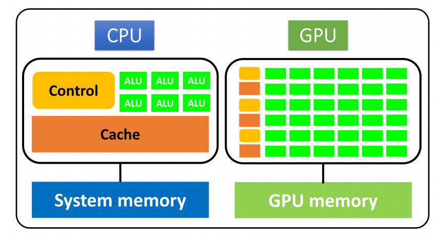
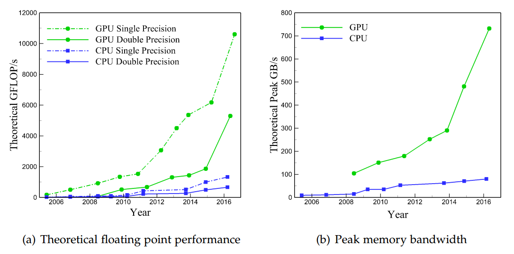

High Performance Computing (HPC) Two examples to start writing HPC code Read more... Open Multi-Processing (OpenMP) Message Passing Interface (MPI) Open Accelerators (OpenACC) Computing power of some supercomputers Tianhe-2 Titan ARCHER 17,920 nodes 18,688 nodes 4,920 nodes CPU node: 2*12 Intel Xeon E5-2692 v2 16-Core AMD 2*12-core E5-2697 v2 (Ivy Bridge) 64GB RAM 32GB RAM 64GM RAM GPU node: 2*10 Intel Xeon E5-2660 v3 + 2NVIDIA Tesla K80 GPU K20X Keplers - 256GB RAM - - Heterogeneous computing platforms  